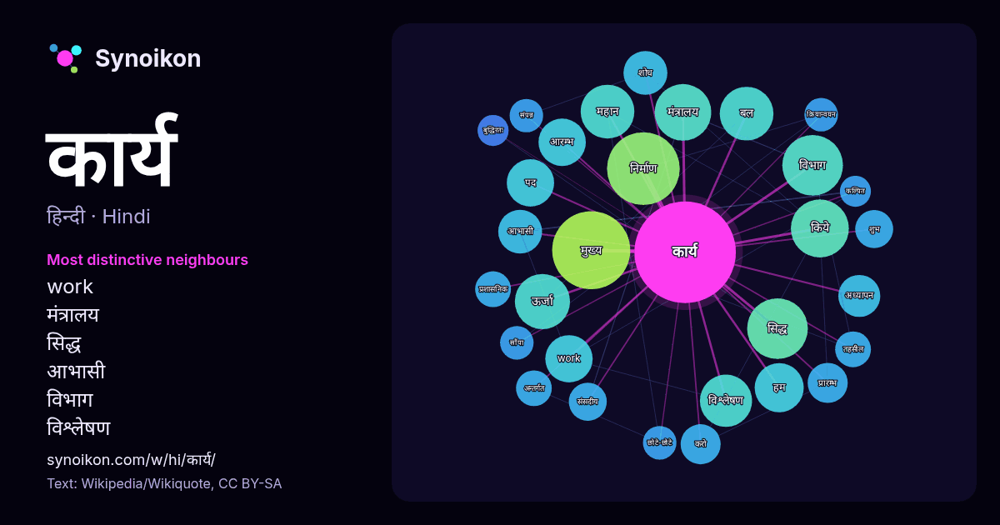

हिन्दी · लोकप्रिय शब्द
कार्य
“work” · विकिपीडिया, Wikiquote के 1335 प्रयोगों में इसके आसपास मिले शब्द।

सबसे विशिष्ट पड़ोसी
- work 15×
- मंत्रालय 15×
- सिद्ध 15×
- आभासी 12×
- विभाग 11×
- विश्लेषण 11×
- महान 11×
- अध्यापन 11×
- ऊर्जा 10×
- बल 10×
- करो 9.5×
- आरम्भ 9.0×
- शुभ 8.6×
- संसदीय 8.3×
- शोध 8.0×
- प्रारम्भ 7.8×
- मुख्य 7.8×
- क्रियान्वयन 7.6×
- छोटे-छोटे 7.0×
- बुद्धिरतः 6.9×
× = सामान्य विकिपीडिया टेक्स्ट की तुलना में कितने गुना अधिक।
सबसे अधिक आने वाले पड़ोसी
- मुख्य 38
- निर्माण 33
- समय 27
- कारण 26
- व्यक्ति 24
- करती 23
- विभाग 23
- सिद्ध 23
- किये 21
- मंत्रालय 20
- अनुसार 19
- ऊर्जा 19
- बल 18
- महान 18
- भारत 17
- विश्लेषण 17
- क्षेत्र 16
- प्रकार 16
- महत्वपूर्ण 16
- सामाजिक 16
संदर्भ में
- तो कहते हैं कि बल ने कार्य किया। कार्य, भौतिकी की सबसे महत्वपूर्ण राशियों में से एक है। कार्य करने की दर को शक्ति कहते हैं। कार्य करने या कराने से वस्तुओं Wikipedia snippets · कार्य (भौतिकी)
- आभासी विस्थापन की दिशा में किया गया कार्य 'आभासी कार्य अथवा कल्पित कार्य (अंग्रेज़ी: virtual work) कहलाता है। आभासी कार्य के सिद्धान्त की सहायता से किसी यांत्रिक Wikipedia snippets · कल्पित कार्य
- कार्य बिंदु एक इकाई है जिसके जरिए यह मापा जाता है कि कोई सूचना प्रणाली अपने प्रयोक्ता को कितनी व्यावसायिक कार्य की सुविधा देती है। कार्य बिंदुएँ, आईएफ़पीयूजी Wikipedia snippets · कार्य बिंदु
- अन्तर्जाल अभियान्त्रिकी कार्य बल (अंग्रेज़ी: Internet Engineering Task Force (IETF , आई॰ई॰टी॰एफ़॰ ; इण्टर्नेट् इञ्जीनियरिङ्ग् टास्क् फ़ोर्स्), एक खुला Wikipedia snippets · अन्तर्जाल अभियान्त्रिकी कार्य बल
- शब्दों में कार्य विश्लेषण (Job analysis या work analysis) किसी कार्य के विषय में सूचनाओं को एकत्र करने की एक प्रक्रिया है। दूसरे शब्दों में, कार्य विश्लेषण Wikipedia snippets · कार्य विश्लेषण
- अन्यथासिद्ध है। कार्य-कारण-सम्बन्ध अन्यव्यतिरेक पर आधारित है। कारण के होने पर कार्य होता है, कारण के न होने पर कार्य नहीं होता। प्रकृति में प्राय: कार्य-कारण-संबंध Wikipedia snippets · कारणता
- कार्य संतुष्टि (job satisfaction) को कई तरह से परिभाषित किया जाता है। कुछ लोग समझते हैं कि कार्य संतुष्टि से यह तात्पर्य है कि कोई व्यक्ति अपने कार्य Wikipedia snippets · कार्य संतुष्टि
- सामूहिक कार्य से पूरे समूह का जो ऑउटपुट मिलता है वह सभी विद्यार्थियों के अपने-अपने अकेले के ऑउटपुट के योग उस ऑउटपुट से अधिक होता है। समाज कार्य समूह कार्य का Wikipedia snippets · सामूहिक कार्य
और शब्द
- इतिहास
- ईश्वर
- कुत्ता
- गर्मी
- गाना
- घंटी
- घड़ी
- घोड़ा
- चाय
- चित्रकला
- छाया
- जंगल
- जलवायु
- जीवन
- तूफ़ान
- दर्पण
- द्वीप
- नक्षत्र
- नमक
- परिवार
- पहाड़
- पानी
- पैसा
- प्रकृति
- बगीचा
- बिल्ली
- भाषा
- भोजन
- माता
- मानचित्र
- मृत्यु
- मौन
- रेगिस्तान
- रेलगाड़ी
- रोटी
- वर्षा
- विज्ञान
- शक्ति
- शरद
- शहद
- शहर
- सड़क
- सत्य
- समय
- सर्दी
- सेतु
- स्वर्ण
- स्वास्थ्य
- हृदय
2026-10-09 को डिफ़ॉल्ट सेटिंग्स (±5 शब्द, मध्यम कॉर्पस) के साथ पहले से गणना की गई। इंटरैक्टिव मानचित्र इसे लाइव डेटा से ताज़ा कर सकता है।
मशीन-अनूदित इंटरफ़ेस; सुधारों का स्वागत है।